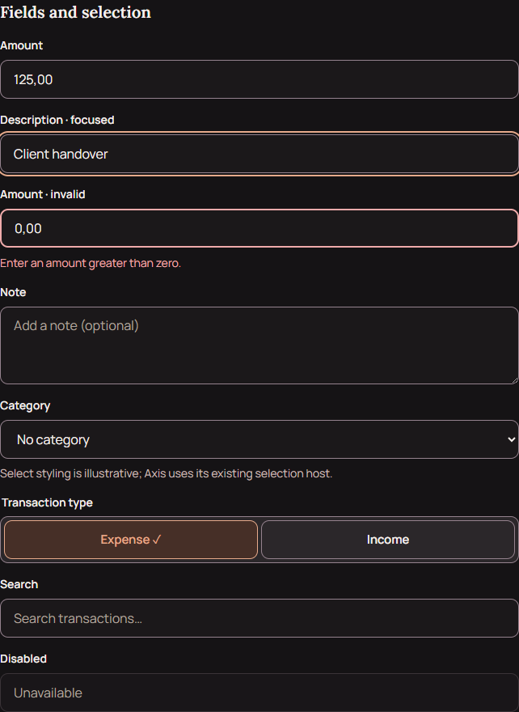
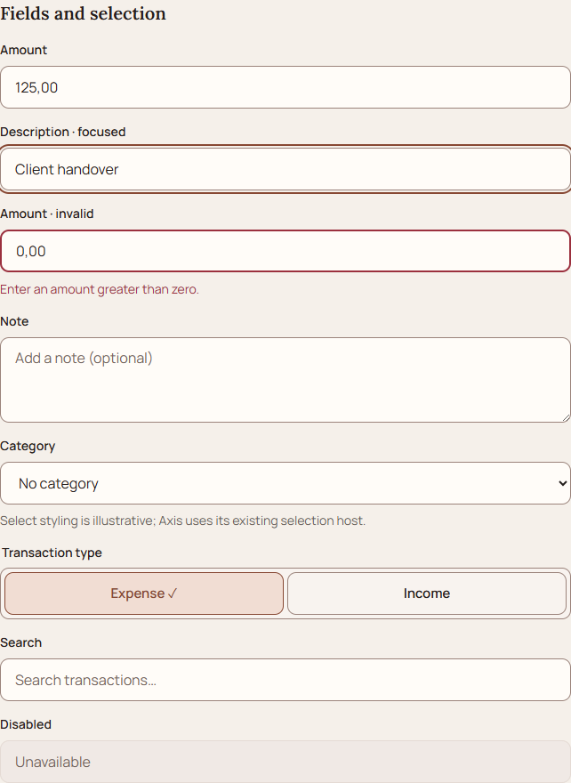
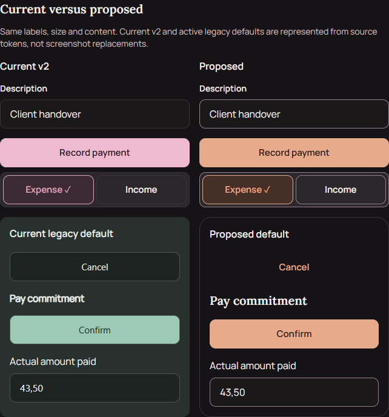
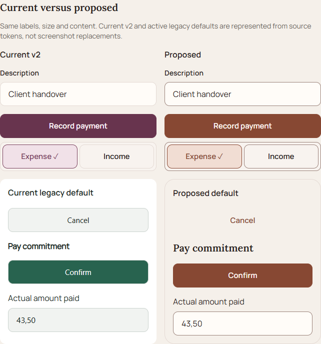

Axis · Soft Copper
Phase2 · approved primary direction, exact component contract and migration planning. No runtime changes. The original Phase1 evidence is preserved.
Open both-theme component specimen · Dark · Light
Brand primary: dark #E7AA8B, light #874833. Copper identifies interaction; success, warning, expense and source markers remain separate. New soft fills and feature mapping are explicitly proposed.
Fields · dark


Fields · light


Current / proposed · dark


Current / proposed · light


Phone-width full specimens
Dark320 · Dark390 · Dark430 · Light320 · Light390 · Light430


Static HTML review with existing local fonts. Native-tab color keys are illustrative, not an OS bar. No native device, keyboard, screen-reader or Dynamic Type acceptance is claimed.
Brand symbol gate
The repository contains Expo placeholder icons, not the approved four-point-star master. The specification defines transparent exports and a decorative48-unit Home header placement; no approximate symbol or blue developer gear was recreated.